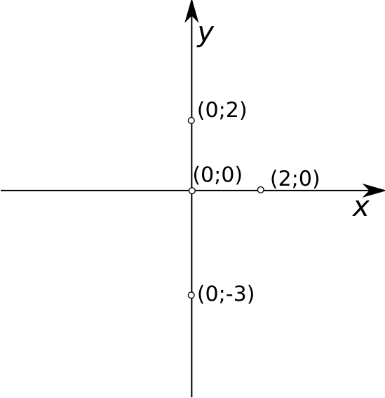

Koordinaatteljestik koosneb kahest ristuvast arvteljest. Abstsisstelg ehk x–telg
on koordinaatteljestikul esitatud horisontaalselt suunaga vasakult paremale, tema
koordinaate nimetatakse abstsissideks.
Punkti väärtus x-teljel näitab, kui kaugel asub antud punkt y–teljest.
Ordinaattelg ehk y–telg on koordinaatteljestikul esitatud vertikaalselt suunaga alt
üles, tema koordinaate nimetatakse ordinaatideks.
Punkti väärtus y-teljel näitab, kui kaugel asub antud punkt x–teljest.
Koordinaatteljed jaotavad tasandi neljaks veerandiks: I veerand, II veerand, III
veerand ja IV veerand.